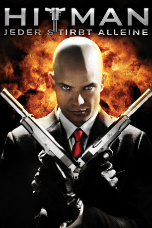
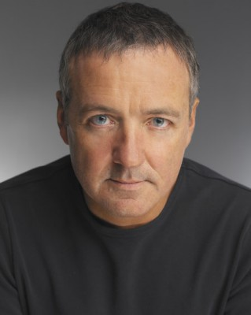
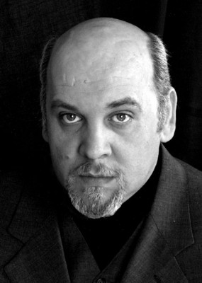
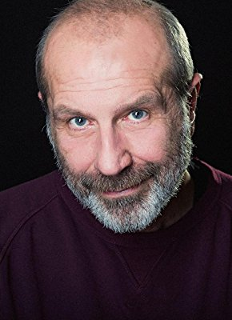

#1174 Hitman - Jeder stirbt alleine
 
 IMDB-Wertung: 6.3 / 10
IMDB-Wertung: 6.3 / 10  Metascore: 35
Metascore: 35 
Seine stahlharten Nerven, sein großer Stolz und seine Professionalität machen ihn zu einem Profikiller, der jeden Menschen für Geld umbringt. Es handelt sich um "Agent 47", einen Mann ohne wirklichen Namen, dessen Nacken mit der Zahl 47 tätowiert ist. Doch als er sich unerwartet in einer politischen Intrige verfängt, wird er zum Gejagten und muss fortan alles daran setzen, vor Interpol und dem russischen Militär zu fliehen. Gleichzeitig versucht er die Verantwortlichen zu finden, um dem Spuk ein Ende zu bereiten.
Jahr: 2007
Dauer: 100 Minuten
FSK: 18
Land: Frankreich Studio: 20th Century Fox of GermanyTonspuren: DTS - ,
Untertitel: Deutsch,
Auflösung: 1080p (1920x816) Größe: 7915 MB
Genre: Action, Krimi, Drama, Thriller
Regisseur: Xavier Gens
Drehbuch: Skip Woods
Soundtrack: Geoff Zanelli
Darsteller:
 Timothy Olyphant als Agent 47
Timothy Olyphant als Agent 47 Dougray Scott als Mike Whittier
Dougray Scott als Mike Whittier Olga Kurylenko als Nika Boronina
Olga Kurylenko als Nika Boronina Robert Knepper als Yuri Marklov
Robert Knepper als Yuri Marklov Ulrich Thomsen als Mikhail Belicoff
Ulrich Thomsen als Mikhail Belicoff Henry Ian Cusick als Udre Belicoff
Henry Ian Cusick als Udre Belicoff Eriq Ebouaney als Bwana Ovie
Eriq Ebouaney als Bwana Ovie Joe Sheridan als Captain Gudnayev
Joe Sheridan als Captain Gudnayev James Faulkner als Smith Jamison
James Faulkner als Smith Jamison Nicky Naudé als Hitman #3
Nicky Naudé als Hitman #3- Anca Radici als The Sad Girl
 Peter Hudson als Mr. Price
Peter Hudson als Mr. Price- Desislava Bakardzhieva als Female News Reporter
-  Paul Barrett als Reporter #3
- Biliana Petrinska als Another Officer
 Paul Bandey als Director MC Ray
Paul Bandey als Director MC Ray Sabine Crossen als June
Sabine Crossen als June-  Velizar Binev als The Priest
- Michael Offei als Jenkins
- Christian Erickson als General Kormarov
- Jean-Marc Bellu als Hitman #2
- Abdou Sagna als Hitman #4
- Ilya Nikitenko als Hitman #5
- Loïc Molla als Hitman #6
- Youssef Diawara als Hog-Tied Prisoner
- Patrick Ligardes als Another Buyer
- Cyril Guei als Old SUV Leader
- Ivan Yurukov als Russian John
- Vladimir Kolev als HRT Guy
- Makssim Kolev Genchev als Yuri's Guy #3
- Kamen Ivanov als Russian Captain
- Stefka Yanorova-Trenfafilova als Belicoff's Wife
- Yasmine Meddour als Belicoff's Daughter
- Iosis Shamli als SWAT Team Leader #1
- Viktoria Dimova als Mike's Daughter - 8 Years
- Svezhen Mladenov als Russian Forensic
- Emile Abossolo M'bo als General Ajunwa
- Nikolay Valentinov Lukanov als Swanky Restaurant Waiter #1
- Boiko Boyanov als SWAT Team Guy #3
- Deyan Donkov als Russian EMT
- Assen Blatechki als FSB Driver
-  Dobrin Dosev als Clergyman
- Vili Dimitrova als Terrified Maid
- Anatoli Nechev als SWAT Team Guy #2
- Blagovest Argirov als Swanky Restaurant Waiter #2
- Nikolay Stoyanov Ilchev als Russian Soldier with Radio
- Milko Marinov Milanov als Interpol Driver
- Elvis Delannay als Leader Assistant
- Dessislava Zidarova als Belicoff's Whore
- Lisa Jacobs als Diana
Datei: X:\FSK18-2000-2009\Hitman - Jeder stirbt alleine (2007, FSK18, 1920x816).mkv seit 29.05.2015
Festplatte: FSK18
 Es gibt insgesamt 106 Filme in der Gruppe 'FSK18-2000-2009'
Es gibt insgesamt 106 Filme in der Gruppe 'FSK18-2000-2009'